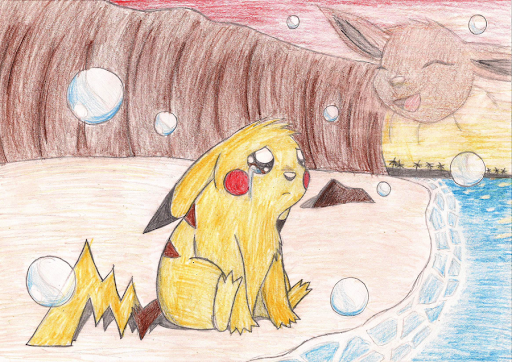
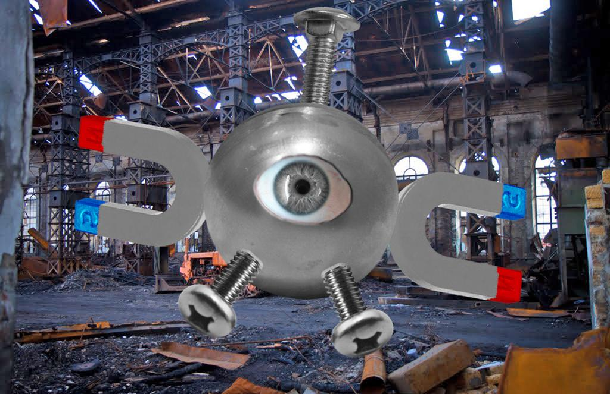

Всем нам известен этот милый и красочный мир Покемонов, но что если все не так красочно как кажется. Этот мир давно утонул в алчности и жадности страшных чудовищ, и я сейчас говорю не о таких монстрах как Gengar, Gyarados или Mewtwo, я говорю о людях. Казалось бы, люди и чудные зверьки живут в мире, веселяться, дружат и проводят время вместе, но на деле это общество веками эксплуатирует этих несчастных и милых монстриков. Это общество настолько долго живет и жестоко проработило покемонов, что все давно считают это нормой.
Давайте взглянем на этот мир по-другому. Люди научились приручать Покемонов даже вплоть до насильного заточения их с помощью технологий и дальнейшего использования в личных целях, эти технологии называются покеболлы и они достаточно распространенны. С одной стороны может показаться, что все же отношения между этими существами и так называемым “тренером” скорее более дружественные, но это не совсем так. Цели поимки этих существ бывают разные, начиная от банального желания появления питомца, заканчивая использованием их для каких-то производственных целей, так например: некоторые существа умеют управлять электричеством и их используют в различных целях для питания различных электрических приборов, установок и т.п. Вы только представьте: бедные зверьки в виде винтиков и магнитиков Magnemit-ы вынужденны батрачить на заводах за БЕСПЛАТНО вместо того, что бы этим занимались мужчины или хотя бы электрички(прим. феминитив от слова электрик)
Отдельно стоить отметить культуру соревнований и турниров в этом мире. Множество людей ловят этих покемонов с целью приручения питомца или с целью победить на соревнованиях с ними. Этому учат детей еще с раннего возраста, практически любой школьник мечтает получить свой первый покебол, что бы насильно поймать какого-нибудь безобидного Charmander-а. Многие дети мечтают вырасти, поймать себе команду покемонов и пойти на бои на стадионах, сражаясь своими зверьками друг с другом, а ведь они не просто царапаются - они дышат огнем, призывают грозу, создают камнепады и это только вершина айсберга того, на что способны Покемоны. Вы только можете себе это представить что бы в нашем мире люди, хозяева своих зверей, собирались на стадионах и сражались на собаках просто так, что бы узнать кто победит Такса или Кане-Корсо. Это какими извергами надо быть, что бы своих "друзей" и "питомцев" вести на такие муки. И эти турниры, где день и ночь дети сражаются между сабой ради каких-то безделушек просто что бы удовлетворить свой эгоизм и жажду самореализации, являются всемирно обожаемыми, тысячи, а то и сотни тысяч людей и фанатов собираются посмотреть как большой огнедышащий дракон будет биться насмерть с электрической крысой.
А самое ужасное, что все эти виды "общения" со своим питомцем, другом, партнером считается нормой и подается как обоюдное желание с обеих сторон. Всем прекрасно известно, что каждый покемон уникален и обладает своим индивидуальным характером и примером этому послужит самый известный персонаж - Пикачу, который несмотря ни на что и ни при каких обстоятельствах не хочет залезать в покеболл. Зрителям пытаются показать, что тренера стараются построить между ними и своими пойманными питомцами дружественные отношения, но тогда становится непонятен смысл тех покеболлов, по факту люди насильно ловят и используют возможности этих существ, хотя тех же целей можно достичь аналогичным путем не ловя в покеболл, а пытаясь просто приручить. Тем самым получается, что как бы отношения заранее строятся на насильном приручении путем возможности в любой момент ограничить свободу существа, что бы в последующем иметь возможность использовать по необходимости для собственных целей, будь то желание общения и обретения друга, победа в турнирах или использование в производственных целях. Возможно действительно большинству покемонов нравится быть заточенными в маленькие шарики размером со сливу, но в таком случае я не могу найти никакого другого обьяснения, кроме как того, что у всех покемонов за время долгих лет эксплуатации выработался Стокгольмский синдром.
Возможно, прочитав эту небольшую статью, вы по-другому посмотрите на мир покемонов, а лучше и на наш мир и на наше отношения к нашим реальным питомцам. Берегите и любите наших братьев-меньших и все же давайте попробуем помочь бедным зверькам со сверхспособностями обрести хоть капельку свободы и прав, путем продвижение тега #СвободуПокемонамEKNM в своих соцсетях.